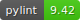

Topological Data Analysis for Anomaly Detection
Contents:
📖 Guidelines
🧪 Tutorial
📚 Technical docs
💡 Theory overview
📑 References
🔄 Changelog
🔠Tdaad package
Topological Data Analysis for Anomaly Detection
Welcome to Topological Data Analysis for Anomaly Detection’s documentation!
View page source
Welcome to Topological Data Analysis for Anomaly Detection’s documentation!

TDAAD

Contents:
📖 Guidelines
🚀 Install
🮠Basic usage
🔀 Improved usage
🧪 Tutorial
Learning on a modified Ornstein–Uhlenbeck process
Topological embedding of a multiple time series
Anomaly Detection based on topological features
📚 Technical docs
💡 Theory overview
📑 References
🔄 Changelog
1.4.0
1.3.1
1.3.0
1.2.0
🔠Tdaad package
tdaad package
Indices and tables

Index
Module Index
Search Page